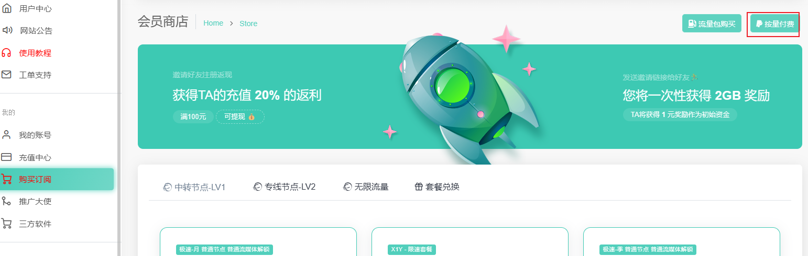
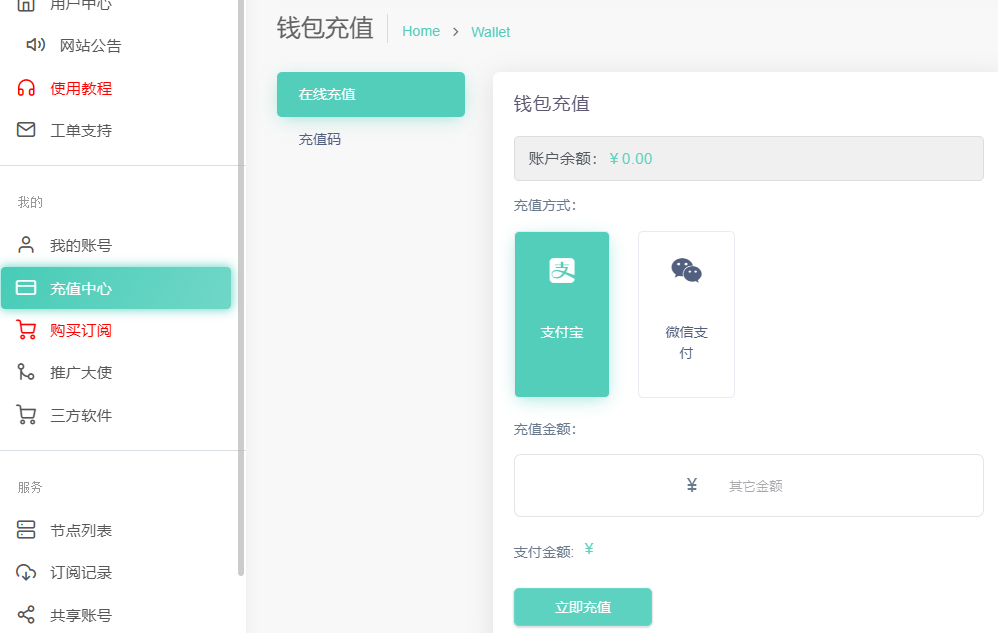
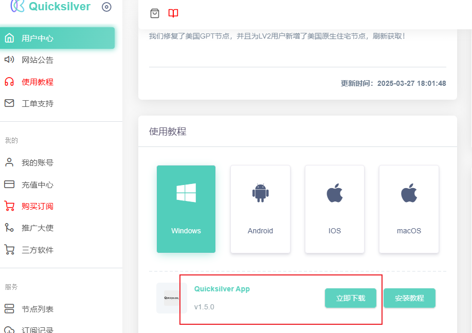
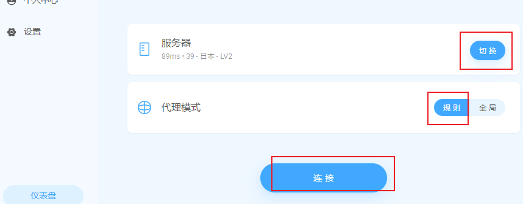

dongde-更新日期：2024年3月21日
链接偶尔会国内屏蔽打不开，过几分钟再试两次。实在不行，找我。
若日常使用不多，则可以直接选择按量付费模式。点击按量付费，确认即可。
（便宜，仅仅使用vpn用AI模型可使用）
若日常使用较多，浏览国外技术网站或视频等，可以订阅合适自己需求的套餐。
（只是用AI模型的话，充个二三十块钱就够用很久很久了）
直接下载官方软件安装即可。
登陆后会自动更新订阅
代理模式选到规则，服务器选择一个国外的延迟较低的，比如 日本、泰国、越南，点击连接。
连接测试：www.google.com
成功访问谷歌，则完成。
PS：
日常使用时一般保持在规则模式连接状态即可。该模式下会自动分流国内浏览用本地网络访问，外网流量用v魔法网络访问。若特殊情况下个别网站规则模式下无法访问，则可切换到全局模式，此时PC上所有流量都使用魔法网络。
偶尔在保持vpn软件连接状态下，直接关机的话，第二天开机后网页无法访问网络。是由于偶发性的直接关机导致的代理设置没有正确更新，打开该软件点击连接再断开连接即可恢复正常。
若最前面Quicksilver注册链接打不开，点击此链接下载客户端安装后找我Quicksilver客户端